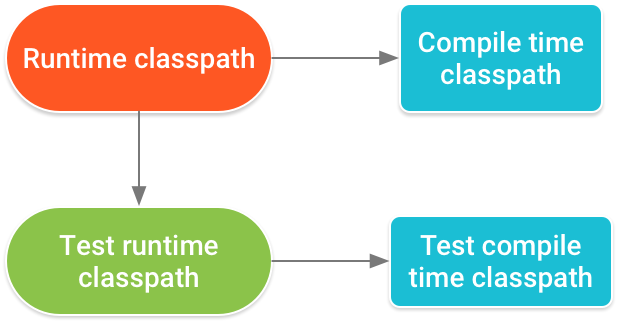

概述
构建流程


典型 Android 应用模块的构建流程通常依循下列步骤：
- 编译器将您的源代码转换成 DEX（Dalvik Executable) 文件（其中包括 Android 设备上运行的字节码），将所有其他内容转换成已编译资源。
- APK 打包器将 DEX 文件和已编译资源合并成单个 APK。 不过，必须先签署 APK，才能将应用安装并部署到 Android 设备上。
- APK 打包器使用调试或发布密钥库签署您的 APK：
- 在生成最终 APK 之前，打包器会使用 zipalign 工具对应用进行优化，减少其在设备上运行时占用的内存。
简要步骤：
Merged Manifest, Merged Resource, Merged Assets --> aapt --> R.java, Compiled ResourceR.java, Source Code --> Java Compiler --> .class files --> proguard --> proguarded.jar file --> dex --> .dex filesCompiled Resource, .dex files, .so files... --> apkbuilder --> .apk file --> sign --> sign.apk file --> zipalign
构建配置文件
Android Plugin for Gradle 引入了许多 DSL 元素，具体可参考：DSL 参考文档
settings.gradle 文件位于项目根目录，用于指示 Gradle 在构建应用时应将哪些模块包括在内。对大多数项目而言，该文件很简单，只包括以下内容：
1 | include ':app' |
顶级 build.gradle 文件位于项目根目录，用于定义适用于项目中所有模块的构建配置。 默认情况下，此顶级构建文件使用 buildscript 代码块来定义项目中所有模块共用的 Gradle 存储区和依赖项。
1 | /** |
对于包含多个模块的 Android 项目，在项目级别定义某些属性，并在所有模块间共享这些属性可能会非常有用。为此，可以将额外属性添加到顶级 build.gradle 文件的 ext 代码块中。
1 | buildscript {...} |
要从相同项目中的模块访问这些属性，在模块的 build.gradle 文件中使用以下语法（虽然 Gradle 可在模块级别定义项目范围的属性，但应避免这样做，因为这样会导致共享这些属性的模块进行耦合）。
1 | android { |
模块级 build.gradle 文件位于各 project/module/ 目录中，用于配置适用于其所在模块的构建设置。
1 | /** |
Gradle 还包括两个属性文件，均位于项目根目录中，可用于指定适用于 Gradle 构建工具包本身的设置：
- gradle.properties：可以在其中配置项目范围 Gradle 设置，例如 Gradle 后台进程的最大堆大小。 如需了解详细信息，请参阅构建环境。
- local.properties：为构建系统配置本地环境属性，例如 SDK 安装路径。由于该文件的内容由 Android Studio 自动生成并且专用于本地开发者环境，因此不应手动修改该文件，或将其纳入版本控制系统。
Android Studio 按逻辑关系将每个模块的源代码和资源分组为源集。模块的 main/ 源集包括其所有构建变体使用的代码和资源。其他源集目录为可选项，在配置新的构建变体时，Android Studio 不会自动为您创建这些目录。不过，创建类似于 main/ 的源集有助于让 Gradle 仅在构建特定应用版本时才应使用的文件和资源井然有序：
- src/main/：此源集包括所有构建变体共用的代码和资源。
- src/buildType/：创建此源集可加入特定构建类型专用的代码和资源。
- src/productFlavor/：创建此源集可加入特定产品风格专用的代码和资源。（注：如果配置构建以组合多个产品风格，则可为风格维度间产品风格的各个组合创建源集目录： src/productFlavor1ProductFlavor2/）
- src/productFlavorBuildType/：创建此源集可加入特定构建变体专用的代码和资源。
例如，要生成应用的“完整调试”版本，构建系统需要合并来自以下源集的代码、设置和资源：
- src/fullDebug/（构建变体源集）
- src/debug/（构建类型源集）
- src/full/（产品风格源集）
- src/main/（主源集）
注：当在 Android Studio 中使用 File > New 菜单选项新建文件或目录时，可以针对特定源集进行创建。 可供您选择的源集取决于您的构建配置，如果所需目录尚不存在，Android Studio 会自动创建。
如果不同源集包含同一文件的不同版本，Gradle 将按以下优先顺序决定使用哪一个文件（左侧源集替换右侧源集的文件和设置）：
- 构建变体 > 构建类型 > 产品风格 > 主源集 > 库依赖项
这样一来，Gradle 便可使用专用于您试图构建的构建变体的文件，同时对与其他应用版本共用的 Activity、应用逻辑和资源加以重复利用。 在合并多个清单时，Gradle 使用同一优先顺序，这样每个构建变体都能在最终清单中定义不同的组件或权限。
android对象为我们提供了3个属性：
- applicationVariants (仅仅适用于Android应用Gradle插件)
- libraryVariants (仅仅适用于Android库Gradle插件)
- testVariants (以上两种Gradle插件都使用)
SDK Version
compileSdkVersion
compileSdkVersion仅仅是告诉Gradle使用哪个版本的SDK编译应用，不会被包含到apk中，完全不影响应用的运行结果，关注compileSdkVersion版本的原因：
- 应用想兼容新版本、使用了新版本API，此时就必须使用新版本及以上版本编译，否则就会编译报错；
- 如果使用了新版本的Support Library，此时也必须使用新版本及以上版本编译；
- 推荐使用最新版本编译，用新的编译检查，可以看到很多新版本相关的警告，提前预研新版本开发；
minSdkVersion
- minSdkVersion表明此应用兼容的最低版本，在低于该版本的手机上安装时会报错，无法安装；
- 如果最低版本设置为19，在代码中使用了API 23中的API，就会有警告。使用运行时检查系统版本的方式可解决；
- 如果使用的某个Support Library的最低版本为7，那minSdkVersion就必须大于等于7了，否则该Support Library在低于7的手机中就要报错了。
targetSdkVersion
- 如果targetSdkVersion为19（对应为Android4.4），应用运行时，最高只能使用API 19的新特性。即使代码中使用了API 23的新特性，实际运行时，也不会使用该新特性；
- 同样的API，比如AlarmManger的set()和get()方法，在API 19和之前的效果是不一样的，如果targetSdkVersion为18，无论运行手机是什么版本，都是旧效果；如果targetSdkVersion为19，那么在4.4以上的手机上运行时，就是新效果了。
总结
综上所诉，compileSdkVersion决定了编译期间能否使用新版本的API。targetSDKVersion决定了运行期间使用哪种特性。建议用较低的minSdkVersion来覆盖最大的人群，用最新的compileSdkVersion和targetSDKVersion来获得最好的外观和行为。即：maxSdkVersion >= buildToolsVersion >= compileSdkVersion>= targetSdkVersion >= minSdkVersion
Set the Application ID
设置Application ID
应用 ID 通过模块的 build.gradle 文件中的 applicationId 属性定义，如下所示：
1 | android { |
应用 ID 和软件包名称彼此无关，可以更改代码的软件包名称（代码命名空间），这不会影响应用 ID，反之亦然。Application ID的命名规则的限制：
- 必须至少包含两段（一个或多个圆点）。
- 每段必须以字母开头。
- 所有字符必须为字母数字或下划线 [a-zA-Z0-9_]。
注意：
- 应用 ID 过去直接关联到代码的软件包名称；所以，有些 Android API 会在其方法名称和参数名称中使用“package name”一词，但这实际上是Application ID。例如，Context.getPackageName() 方法会返回您的应用 ID。
- 使用 WebView的话，Application ID 中应将软件包名称用作前缀；否则，可能会遇到如问题 211768 中所述的问题。
更改用于编译变体的Application ID
每个编译变体应定义为单独的产品特性。对于 productFlavors 块中的每个类型，可以重新定义 applicationId 属性，也可以使用 applicationIdSuffix 在默认的应用 ID 上追加一段，如下所示：
1 | android { |
也可以根据自己的版本类型使用 applicationIdSuffix 追加一段，如下所示：
1 | android { |
由于 Gradle 会在产品特性后面应用版本类型配置，因此“free debug”编译变体的应用 ID 现在是“com.example.myapp.free.debug”。
注意：
- 为了与以前的 SDK 工具兼容，如果未在 build.gradle 文件中定义 applicationId 属性，构建工具会将 AndroidManifest.xml 文件中的软件包名称用作应用 ID。在这种情况下，重构软件包名称也会更改您的应用 ID。
- 如果需要在清单文件中引用应用 ID，可以在任何清单属性中使用 ${applicationId} 占位符。在编译期间，Gradle 会将此标记替换为实际的应用 ID。
更改用于测试的应用 ID
默认情况下，构建工具会将应用 ID 应用到您的测试 APK，该 APK 将应用 ID 用于给定的编译变体，同时追加 .test。例如，com.example.myapp.free 编译变体的测试 APK 的应用 ID 为 com.example.myapp.free.test。
可以通过在 defaultConfig 或 productFlavor 块中定义 testApplicationId 属性来更改应用 ID，不过应该没有必要这样做。
注意：为了避免与受测应用发生名称冲突，构建工具会为您的测试 APK 生成 R 类，其命名空间基于测试应用 ID，而不是清单文件中定义的软件包名称。
更改软件包名称
默认情况下，项目的软件包名称与应用 ID 匹配，但您可以更改软件包名称。不过，如果您要更改软件包名称，需要注意的是，软件包名称（由项目目录结构定义）应始终与 AndroidManifest.xml 文件中的 package 属性匹配，如下所示：
1 |
|
Android 构建工具使用 package 属性来发挥两种作用：
- 它会将此名称用作应用生成的 R.java 类的命名空间。示例：对于上面的清单，R 类将为 com.example.myapp.R。
- 它会使用此名称解析清单文件中声明的任何相关类名。示例：对于上面的清单，声明为
<activity android:name=".MainActivity">的 Activity 将解析为 com.example.myapp.MainActivity。
因此，package 属性中的名称应始终与项目的基础软件包名称匹配，基础软件包中保存着您的 Activity 及其他应用代码。当然，您的项目中可以包含子软件包，但是这些文件必须从 package 属性导入使用命名空间的 R.java 类，而且清单中声明的任何应用组件都必须添加缺失的子软件包名称（或者使用完全限定软件包名称）。
如果您要完全重构您的软件包名称，请确保也更新 package 属性。只要您使用 Android Studio 的工具重命名和重构您的软件包，那么这些就会自动保持同步。（如果它们未保持同步，您的应用代码将无法解析 R 类，因为它不再位于同一软件包中，并且清单无法识别您的 Activity 或其他组件。）
您必须始终在项目的主 AndroidManifest.xml 文件中指定 package 属性。如果您有其他清单文件（如产品特性或版本类型的清单文件），请注意，优先级最高的清单文件提供的软件包名称始终用于最终合并的清单。
还有一点需要了解：虽然清单 package 和 Gradle applicationId 可以具有不同的名称，但构建工具会在编译结束时将应用 ID 复制到 APK 的最终清单文件中。所以，如果您在编译后检查 AndroidManifest.xml 文件，发现 package 属性发生更改就不足为奇了。实际上，Google Play 商店和 Android 平台会查看 package 属性来识别您的应用。所以，编译系统利用原始值（设置 R 类的命名空间并解析清单类名称）后，它会舍弃该值并将其替换为应用 ID。
Add the dependencies
指定依赖项时，不应使用动态版本号，比如 'com.android.tools.build:gradle:3.+'。 使用此功能，可能会导致意外版本更新和难以解析版本差异。
依赖项类型
1 | apply plugin: 'com.android.application' |
本地库模块依赖项
1 | implementation project(':mylibrary') |
这段代码声明名为“mylibrary”的 Android 库模块的依赖项（该名称必须匹配使用 settings.gradle 文件中的 include: 定义的库名称）。在构建应用时，构建系统会编译库模块，并将生成的编译内容打包到 APK中。
本地二进制文件依赖项
1 | implementation fileTree(dir: 'libs', include: ['*.jar']) |
Gradle 声明项目 module_name/libs/ 目录中 JAR 文件的依赖项（因为 Gradle 会读取 build.gradle 文件的相对路径）。或者，也可以像下面这样指定单独的文件：
1 | implementation files('libs/foo.jar', 'libs/bar.jar') |
远程二进制文件依赖项
1 | implementation 'com.example.android:app-magic:12.3' |
以上代码实际上是下列代码的缩写形式：
1 | implementation group: 'com.example.android', name: 'app-magic', version: '12.3' |
这段代码声明com.example.android命名空间组内“app-magic”库 12.3 版本的依赖项。
注：与此类似的远程依赖项要求您声明相应的远程代码库，Gradle 应在其中寻找该库。如果本地尚不存在该库，Gradle 会在构建需要它时（例如，当您点击 Sync Project with Gradle Files 或当您运行构建时）从远程站点获取该库。
依赖项配置
| 新配置 | 已弃用配置 | 行为 |
|---|---|---|
| implementation | compile | Gradle 会将依赖项添加到编译类路径，并将依赖项打包到构建输出。但是，当您的模块配置 implementation 依赖项时，会告知 Gradle 您不想模块在编译时将依赖项泄露给其他模块。也就是说，依赖项只能在运行时供其他模块使用。使用此依赖项配置而不是api 或 compile（已弃用），可以显著缩短构建时间，因为它可以减少构建系统需要重新编译的模块数量。例如，如果 implementation 依赖项更改了其 API，Gradle 只会重新编译该依赖项和直接依赖它的模块。大多数应用和测试模块都应使用此配置。 |
| api | compile | Gradle 会将依赖项添加到编译类路径，并构建输出。当模块包括 api 依赖项时，会告知 Gradle 模块想将该依赖项间接导出至其他模块，以使这些模块在运行时和编译时均可使用该依赖项。此配置的行为类似于 compile （现已弃用），但您应仅对需要间接导出至其他上游消费者的依赖项慎重使用它。 这是因为，如果 api 依赖项更改了其外部 API，Gradle 会重新编译可以在编译时访问该依赖项的所有模块。 因此，拥有大量 api 依赖项会显著增加构建时间。 如果不想向不同的模块公开依赖项的 API，库模块应改用 implementation 依赖项。 |
| compileOnly | provided | Gradle 只会将依赖项添加到编译类路径（即不会将其添加到构建输出）。如果是创建 Android 模块且在编译期间需要使用该依赖项，在运行时可选择呈现该依赖项，则此配置会很有用。如果使用此配置，则您的库模块必须包含运行时条件，以便检查是否提供该依赖项，然后妥善更改其行为，以便模块在未提供依赖项的情况下仍可正常工作。这样做不会添加不重要的瞬时依赖项，有助于缩减最终 APK 的大小。 此配置的行为类似于 provided （现已弃用）。 |
| runtimeOnly | apk | Gradle 只会将依赖项添加到构建输出，供运行时使用。也就是说，不会将其添加到编译类路径。 此配置的行为类似于 apk（现已弃用）。 |
| annotationProcessor | compile | 要在库中添加注解处理器依赖项，则必须使用 annotationProcessor 配置将其添加到注解处理器类路径。这是因为使用此配置可分离编译类路径与注解处理器类路径，从而提升构建性能。如果 Gradle 在编译类路径上找到注解处理器，则会停用 避免编译功能，这样会增加构建时间（Gradle 5.0 和更高版本会忽略编译类路径上的注解处理器）。如果 JAR 文件包含以下文件，则 Android Gradle Plugin 会假定依赖项是注解处理器：META-INF/services/javax.annotation.processing.Processor。如果插件检测到编译类路径上包含注解处理器，则会生成构建错误。 |
以上配置适用于您的项目的主源集，该源集应用于所有构建不同类型。 如果您改为只想为特定构建不同类型源集或测试源集声明依赖项，则必须大写配置名称并在其前面加上构建不同类型或测试源集的名称作为前缀。
例如，要仅将 implementation 依赖项添加到您的“free”产品风格（使用远程二进制文件依赖项），需要使用下面这样的代码：
1 | dependencies { |
但如果想要为组合产品风格和构建类型的变体添加依赖项，则必须在 configurations 代码块中初始化配置名称。 以下示例向您的“freeDebug”构建变体添加 runtimeOnly 依赖项（使用本地二进制文件依赖项）：
1 | configurations { |
要为您的本地测试和设备化测试添加 implementation 依赖项，需要使用下面这样的代码：
1 | dependencies { |
但某些配置在这种情况下没有意义。 例如，由于其他模块无法依赖 androidTest，因此如果使用 androidTestApi 配置，则会收到以下警告：
1 | WARNING: Configuration 'androidTestApi' is obsolete and has been replaced with 'androidTestImplementation'. |
添加注解处理器
如果将注解处理器添加到您的编译类路径，您将看到一条与以下消息类似的错误消息：
1 | Error: Annotation processors must be explicitly declared now. |
要解决此错误问题，请使用 annotationProcessor 配置您的依赖项，以在您的项目中添加注解处理器，如下所示：
1 | dependencies { |
如果需要向注解处理器传递参数，您可以在您的模块构建配置中使用 AnnotationProcessorOptions 代码块。 例如，如果要以键值对形式传递原始数据类型，则可使用 argument 属性，如下所示：
1 | android { |
但在使用 Android Gradle Plugin 3.2.0 和更高版本时，您需要使用 Gradle CommandLineArgumentProvider 接口传递表示文件或目录的处理器参数。使用 CommandLineArgumentProvider 可让您或注解处理器作者将增量构建属性类型注解应用于每个参数，从而提高增量构建和缓存干净构建的正确性和性能。
例如，下面的类可实现 CommandLineArgumentProvider 并注解处理器的每个参数。 此外，此示例也使用 Groovy 语言语法，且直接包含在模块的 build.gradle 文件中。
注：通常，注解处理器作者会提供此类或有关如何编写这种类的说明。这是因为每个参数均需指定正确的构建属性类型注解，才能按预期运行。
1 | class MyArgsProvider implements CommandLineArgumentProvider { |
在创建实现 CommandLineArgumentProvider 的类后，您需要使用 annotationProcessorOptions.compilerArgumentProvider 属性初始化并将其传递至 Android 插件，如下所示。
1 | // This is in your module's build.gradle file. |
如果编译类路径中的依赖项包含您不需要的注解处理器，您可以将以下代码添加到 build.gradle 文件中，停用错误检查。 请记住，您添加到编译类路径中的注解处理器仍不会添加到处理器类路径中。
1 | android { |
如果您将项目的注解处理器迁移到处理器类路径后遇到问题，可通过将 includeCompileClasspath 设置为 true，允许编译类路径上包含注解处理器。 但是，我们不建议将此属性设置为 true，并且我们将在以后的 Android plugin 更新版本中移除这种操作的相关选项。
排除传递依赖项
随着应用范围的扩大，其中可包含许多依赖项，包括直接依赖项和传递依赖项（应用的导入库所依赖的库）。 要排除不再需要的传递依赖项，您可以使用 exclude 关键字，如下所示：
1 | dependencies { |
如果需要从您的测试中排除某些传递依赖项，上文所示的代码示例可能无法按预期发挥作用。 这是因为测试配置（例如 androidTestImplementation）扩展了模块的 implementation 配置。 也就是说，在 Gradle 解析配置时其中始终包含 implementation 依赖项。
因此，要从测试中排除传递依赖项，必须在执行代码时执行此操作，如下所示：
1 | android.testVariants.all { variant -> |
使用 variant-aware 依赖项管理
Android 插件 3.0.0 及更高版本包含一项新的依赖项机制，这种机制可以在消费库时自动匹配不同类型。 也就是说，应用的 debug 不同类型将自动消费库的 debug 不同类型，依此类推。 这种机制也适用于使用风格的情况—应用的 freeDebug 变体将使用库的 freeDebug 变体。
要让插件准确匹配变体，您需要为无法直接匹配的情况提供匹配回退。 假设您的应用配置一个名为“staging”的构建类型，但其库依赖项之一没有进行相应配置。 在插件尝试构建您的“staging”版本的应用时，它将无法了解库要使用哪一个版本，您将看到一条类似以下消息的错误消息：
1 | Error:Failed to resolve: Could not resolve project :mylibrary. |
远程代码库
如果您的依赖项并非本地库或文件树，Gradle 会在您的 build.gradle 文件 repositories 程序块中指定的任何一个在线代码库中寻找文件。 列出各代码库的顺序决定了 Gradle 在这些代码库中搜索各项目依赖项的顺序。 例如，如果代码库 A 和 B 都提供某依赖项，而您先列出代码库 A，则 Gradle 会从代码库 A 下载此依赖项。
默认情况下，Android Studio 新项目会在项目的顶级 build.gradle 文件中指定 Google 的 Maven 代码库和 JCenter 作为代码库位置，如下所示：
1 | allprojects { |
如果您需要的内容来自 Maven 中央代码库，则添加 mavenCentral()；如果来自本地代码库，则使用 mavenLocal()，或者也可像下面这样声明特定 Maven 或 Ivy 代码库：
1 | allprojects { |
依赖项顺序
例如，如果您的项目声明以下内容：
- LIB_A 和 LIB_B 上的依赖项（按照该顺序）
- 并且 LIB_A 依赖 LIB_C 和 LIB_D （按照该顺序）
- 并且 LIB_B 还依赖 LIB_C
然后，扁平型依赖项顺序将如下所示：
- LIB_A
- LIB_D
- LIB_B
- LIB_C
查看依赖项树
运行gradle androidDependencies即可查看依赖项树。
修复依赖项解析错误
修复重复类错误
如果某类多次出现在运行时类路径中，您会收到一条与以下内容相似的错误：
1 | Program type already present com.example.MyClass |
该错误通常是下列其中一种情况所致：
- 二进制文件依赖项包括您的应用同时作为直接依赖项包括的库。 例如，您的应用在库 A 和库 B 上声明了直接依赖项，但库 A 的二进制文件中已包括库 B：要解决此问题，请取消将库 B 作为直接依赖项。
- 您的应用在同一库上具有本地二进制文件依赖项和远程二进制文件依赖项：要解决此问题，请移除其中一个二进制文件依赖项。
解决类路径之间的冲突问题
当 Gradle 解析编译类路径时，会先解析运行时类路径，然后使用此结果确定应添加到编译类路径的依赖项版本。 换言之，运行时类路径决定下游类路径的相同依赖项所需的版本号。
应用的运行时类路径还决定 Gradle 匹配运行类路径中应用测试 APK 的依赖项所需要的版本号：
如果相同依赖项的冲突版本出现在多个类路径中，您可能会看到与以下内容相似的错误：
1 | Conflict with dependency 'com.example.library:some-lib:2.0' in project 'my-library'. |
例如，当您的应用使用 implementation 依赖项配置加入某依赖项版本，并且库模块使用 runtimeOnly 配置加入此依赖项的不同版本时，可能会发生该冲突。 要解决此问题，请执行以下其中一项操作：
- 将所需版本的依赖项作为 api 依赖项加入您的库模块。 也就是说，仅库模块声明此依赖项，但应用模块也可间接访问其 API。
- 或者，您也可以同时在两个模块中声明此依赖项，但应确保每个模块使用的版本相同。 请考虑配置项目范围的属性，以确保各依赖项的多个版本在整个项目中都保持一致。
应用自定义构建逻辑
本节介绍的内容在您想要扩展 Android Gradle Plugin 或编写自己的插件时很有用。
为自定义逻辑发布变体依赖项
库可以包含其他项目或子项目可能要使用的功能。 发布库是为其消费者提供库的流程。 库可以控制其消费者在编译时和运行时可访问的依赖项。现有两种不同的配置，其中包含消费者为使用库而必须使用的各类路径的传递依赖项，如下所述：
1 | variant_nameApiElements：此配置包含编译时消费者可使用的传递依赖项。 |
自定义依赖项解析策略
项目包含的依赖项可能包含在相同库的两个不同版本中，这样会导致依赖项冲突。例如，如果您的项目依赖于模块 A 的版本 1 和模块 B 的版本 2，模块 A 间接依赖于模块 B 的版本 3，则会出现依赖项版本冲突。
要解决此冲突问题，Android Gradle Plugin 需使用以下依赖项解析策略：当插件检测到依赖图中包含相同模块的不同版本时，会默认选择版本最高的模块。但此策略可能无法按预期发挥作用。 要自定义依赖项解析策略，请使用以下配置解析您任务所需变体的特定依赖项：
1 | variant_nameCompileClasspath：此配置包含适用于给定变体编译类路径的解析策略。 |
Android Gradle Plugin 包含可用于访问各变体配置对象的 getter。 因此，您可以使用变体 API 查询依赖项解析策略，如下例所示：
1 | android { |
配置编译变体
配置版本类型
1 | android { |
配置产品特性
配置产品特性
创建产品特性与创建版本类型类似：将其添加到编译配置中的 productFlavors 代码块并添加所需的设置。产品特性支持与 defaultConfig 相同的属性，这是因为 defaultConfig 实际上属于 ProductFlavor 类。这意味着，您可以在 defaultConfig 代码块中为所有类型提供基本配置，并且每个类型都可以更改其中任何默认值.
所有类型都必须属于一个指定的类型维度，即一个产品特性组。即使您打算只使用一个维度，也必须将类型分配到类型维度.
1 | android { |
将多个产品特性与类型维度结合使用
在编译应用时，Gradle 会结合使用您定义的每个类型维度的产品特性配置以及版本类型配置，以创建最终的编译变体。Gradle 不会将属于同一类型维度的产品特性组合在一起。
以下代码示例使用 flavorDimensions 属性来创建“mode”类型维度和“api”类型维度，前者用于将“full”和“demo”产品特性进行分组，后者用于根据 API 级别对产品特性配置进行分组：
1 | android { |
以上面的编译配置为例，Gradle 使用以下命名方案创建了总共 12 个编译变体：
- 编译变体：[minApi24, minApi23, minApi21][Demo, Full][Debug, Release]
- 对应的 APK：app-[minApi24, minApi23, minApi21]-[demo, full]-[debug, release].apk
除了可以为各个产品特性和编译变体创建源集目录外，您还可以为每个产品特性组合创建源集目录。例如，您可以创建 Java 源文件并将其添加到 src/demoMinApi24/java/ 目录中，这样 Gradle 就只会在编译同时对应这两种产品特性的变体时才使用这些源文件。您为产品特性组合创建的源集的优先级高于属于各个产品特性的源集。
过滤变体
Gradle 会为您配置的产品特性和版本类型的每种可能组合创建编译变体。但是，某些编译变体可能并不是您需要的，或者在项目上下文中没有意义。您可以通过在模块级 build.gradle 文件中创建变体过滤器来移除某些编译变体配置。
以上一部分中的编译配置为例，假设您打算让“demo”版应用仅支持 API 级别 23 及更高级别。您可以使用 variantFilter 代码块过滤掉所有将“minApi21”和“demo”产品特性组合在一起的编译变体配置：
1 | android { |
维度回退
情况1：app中有某个build type但module中没有。
1 | // In the app's build.gradle file. |
注意：module中有但app中没有的build type是不会报错的，因为gradle插件根本不会去module中请求build type。
情况2：在app和它的module中都有同一个维度（比如：flavorDimensions ‘tier’），但你的app有的flavors在module中没有。
1 | flavorDimensions 'tier' |
注意：对于在同一个维度下，module中有的flavors但app中没有是不会报错的，因为gradle插件根本不会去module中请求flavors。
情况3：module中有某个dimension维度，但app中没有。
1 | // In the app's build.gradle file. |
注意：当一个维度app中有但module中没有的时候是不会报错，因为gradle插件只会匹配已经在module中存在的维度，比如module中没有abi这个维度，当app为freeX86Debug时，你的module就用freeDebug。
情况4：若module中没有某个dimension，则app不需要在这个dimension下做任何处理。
创建源集
创建源集
默认情况下，Android Studio 会为您希望在所有编译变体之间共享的所有内容创建 main/ 源集和目录。但是，您可以创建新的源集来精确控制 Gradle 为特定版本类型、产品特性（以及使用类型维度时的产品特性组合）和编译变体编译和打包的文件。例如，您可以在 main/ 源集中定义基本功能，并使用产品特性源集来为不同客户端更改应用的品牌，或仅为使用“debug”版本类型的编译变体添加特殊权限和日志记录功能。
Gradle 要求您以某种类似于 main/ 源集的方式组织源集文件和目录。例如，Gradle 要求将“debug”版本类型特有的 Java 类文件放在 src/debug/java/ 目录中。
可通过gradle sourceSets查看不同变体期望的源集路径；可通过Android Studio自带功能创建源集。
更改默认源集配置
可以使用sourceSets修改默认源集路径。
1 | android { |
使用源集编译
可以使用源集目录来添加只希望与某些配置打包在一起的代码和资源。例如，如果您要编译“demoDebug”这个变体（“demo”产品特性和“debug”版本类型的混合产物），则 Gradle 会查看这些目录，并为它们指定以下优先级：
- src/demoDebug/（编译变体源集）
- src/debug/（版本类型源集）
- src/demo/（产品特性源集）
- src/main/（主源集）
注意：如果您结合使用多个产品特性，那么这些产品特性的优先级由它们所属的类型维度决定。使用 android.flavorDimensions 属性列出类型维度时，属于您列出的第一个类型维度的产品特性的优先级高于属于第二个类型维度的产品特性，依此类推。此外，您为产品特性组合创建的源集的优先级高于属于各个产品特性的源集。
上面列出的顺序决定了 Gradle 组合代码和资源时哪个源集的优先级更高。由于 demoDebug/ 源集目录可能包含该编译变体特有的文件，因此，如果 demoDebug/ 包含在 debug/ 中也定义了的文件，则 Gradle 会使用 demoDebug/ 源集中的文件。类似地，Gradle 会为版本类型和产品特性源集中的文件提供比 main/ 中的相同文件更高的优先级。在应用以下编译规则时，Gradle 会考虑这种优先顺序：
- java/ 目录中的所有源代码将一起编译以生成单个输出。
注意：对于给定的编译变体，如果 Gradle 遇到两个或更多个源集目录定义了同一个 Java 类的情况，则会抛出编译错误。例如，在编译调试 APK 时，您不能同时定义 src/debug/Utility.java 和 src/main/Utility.java。这是因为 Gradle 在编译过程中会查看这两个目录并抛出“重复类”错误。如果您要为不同的版本类型使用不同版本的 Utility.java，则可以让每个版本类型定义各自的文件版本，而不是将其包含在 main/ 源集中。 - 所有清单都将合并为一个清单，优先级将按照上面列出的顺序提供。也就是说，版本类型的清单设置会替换产品特性的清单设置，依此类推。
- 同样，values/ 目录中的文件也会合并在一起。如果两个文件（如两个 strings.xml 文件）的名称相同，将按照上面列表中的顺序指定优先级。也就是说，在版本类型源集的文件中定义的值会重写在产品特性的同一文件中定义的值，依此类推。
- res/ 和 asset/ 目录中的资源会打包在一起。如果在两个或更多个源集中定义了同名的资源，将按照上面列表中的顺序指定优先级。
- 最后，在编译 APK 时，Gradle 会为库模块依赖项随附的资源和清单指定最低优先级。
声明依赖项
可以为特定编译变体或测试源集配置依赖项，方法是在 Implementation 关键字前面加上编译变体或测试源集的名称作为前缀，如以下示例所示。
1 | dependencies { |
配置签名设置
除非您明确定义此版本的签名配置，否则 Gradle 不会为该版本的 APK 签名。您可以轻松创建发布密钥并使用 Android Studio 为发布版本类型签名。要使用 Gradle 编译配置为您的发布版本类型手动配置签名，请执行以下操作：
- 创建一个密钥库。密钥库是一个包含一组私钥的二进制文件。您必须将密钥库保存在安全可靠的地方。
- 创建一个私钥。私钥代表将通过应用识别的实体，如个人或公司。
- 将签名配置添加到模块级 build.gradle 文件中：
1 | android { |
注意：在编译文件中添加发布密钥和密钥存储区的密码并不是一种好的安全做法。作为替代方案，您可以配置编译文件以从环境变量获取这些密码，或让编译流程提示您输入这些密码。
要从环境变量获取这些密码，请编写以下代码：
1 | storePassword System.getenv("KSTOREPWD") |
要让编译流程在您要从命令行调用此编译时提示您输入这些密码，请编写以下代码：
1 | storePassword System.console().readLine("\nKeystore password: ") |
警告：请将密钥库和私钥保存在安全可靠的地方，并确保您为其创建了安全的备份。如果您将应用发布到 Google Play，随后丢失了用于为应用签名的密钥，那么您将无法向您的应用发布任何更新，因为您必须始终使用相同的密钥为应用的所有版本签名。
注意：当buildType.debug中没有指定signingConfig时，即使productFlavors中提供了签名配置，也会默认使用Android Studio提供的签名，因此如果要使debug下的flavor签名生效，需要指定debug的signingConfig为null，如下：
1 | def flavorSigns = [ |
构建多应用
构建多应用
屏幕密度
以下为compatibleScreens列出的每个屏幕密度生成单独的APK，但ldpi，xxhdpi和xxxhdpi除外：
1 | android { |
enable：如果将此元素设置为true，Gradle会根据您定义的屏幕密度生成多个APK。默认值为false。
exclude：指定以逗号分隔的密度列表，Gradle不应为其生成单独的APK。
reset()：清除默认的屏幕密度列表，仅在与include元素组合时使用， 以指定要添加的密度。
include：指定Gradle应为其生成APK的密度列表。只能结合使用reset()来指定密度的确切列表。
compatibleScreens：指定兼容屏幕尺寸的逗号分隔列表，这会为每个APK在manifest中注入一个匹配的
<compatible-screens>节点。此设置提供了在同一build.gradle中管理屏幕密度和屏幕大小的便捷方法。但是，使用<compatible-screens>限制了应用程序可以使用的设备类型。1
2reset() // Clears the default list from all densities to no densities.
include "ldpi", "xxhdpi" // Specifies the two densities we want to generate APKs for.
因为基于屏幕密度的每个APK都包含<compatible-screens>标记，其中包含有关APK支持的屏幕类型的特定限制，即使您发布了多个APK，某些新设备也无法匹配您的多个APK过滤器。因此，Gradle始终会生成一个额外的通用APK，其中包含所有屏幕密度的资源，并且不包含<compatible-screens>标记。您应该发布此通用APK以及每个密度的APK，以便为与APK兼容的设备提供后备兼容的<compatible-screens>标记。
ABI
1 | android { |
ABI 包含以下信息：
- 机器代码应使用的 CPU 指令集。
- 运行时内存存储和加载的字节顺序。
- 可执行二进制文件（例如程序和共享库）的格式，以及它们支持的内容类型。
- 用于解析内容与系统之间数据的各种约定。这些约定包括对齐限制，以及系统如何使用堆栈和在调用函数时注册。
- 运行时可用于机器代码的函数符号列表 - 通常来自非常具体的库集。
- enable：如果您将此元素设置为true，Gradle会根据您定义的ABI生成多个APK。默认值是false
- exclude：指定用逗号分隔的ABI的名单不生成单独的APK。
- reset：清除ABI的默认列表。仅在与include元素结合使用时才使用， 以指定要添加的ABI。
- include：指定Gradle应为其生成APK的ABI的逗号分隔列表。只能结合使用reset()来指定ABI的确切列表。
- universalApk：如果true，除了per-ABI APK，Gradle还生成通用APK。通用APK包含单个APK中所有ABI的代码和资源。默认值是false。请注意，该选项仅在该splits.abi块中可用。当根据屏幕密度构建多个APK时，Gradle始终会生成一个通用APK，其中包含用于所有屏幕密度的代码和资源。
在Gradle 3.1.0及更高版本中不再默认生成支持mips, mips64, 和armeabi的apk，因为 NDK r17 及更高版本不再支持这些abi。因此如果使用Gradle版本低于3.1.0，NDK高于r17，则会报错。
配置版本
默认生成的多个apk的版本信息是一样的，但是GP不允许同一应用的多apk拥有相同的版本信息，因此需要为其生成不同的版本。
如果您的构建包含通用APK，则应为其分配一个低于任何其他APK的版本代码。 由于Google Play商店会安装与目标设备兼容且版本编号最高的应用版本，因此将较低版本的代码分配给通用APK可确保Google Play商店尝试安装其中一个APK，然后再回到通用版本APK。
1 | android { |
格式化apk名
1 | android { |
Manifest合并
合并优先级
合并工具会根据每个清单文件的优先级按顺序合并，将所有清单文件组合到一个文件中。

有三种基本的清单文件可以互相合并，它们的合并优先级如下（按优先级由高到低的顺序）：
编译变体的清单文件
如果您的变体有多个源集，则其清单优先级如下：- 编译变体清单（如 src/demoDebug/）
- 版本类型清单（如 src/debug/）
- 产品类型清单（如 src/demo/）
如果您使用的是类型维度，则清单优先级将与每个维度在 flavorDimensions 属性中的列示顺序（按优先级由高到低的顺序）对应。
应用模块的主清单文件
所包含的库中的清单文件
如果您有多个库，则其清单优先级与依赖顺序（库出现在 Gradle dependencies 块中的顺序）匹配。例如，先将库清单合并到主清单中，然后再将主清单合并到编译变体清单中。
注：build.gradle 文件中的编译配置将替换合并后的清单文件中的所有对应属性。例如，build.gradle 文件中的 minSdkVersion 将替换 <uses-sdk> 清单元素中的匹配属性。为了避免混淆，您只需省去 <uses-sdk> 元素并在 build.gradle 文件中定义这些属性。
合并冲突启发式算法
合并工具可以在逻辑上将一个清单中的每个 XML 元素与另一个清单中的对应元素相匹配。如果优先级较低的清单中的某个元素与优先级较高的清单中的任何元素都不匹配，则会将该元素添加到合并后的清单。不过，如果有匹配的元素，则合并工具会尝试将每个元素的所有属性组合到同一元素中。如果该工具发现两个清单包含相同的属性，但值不同，则会发生合并冲突。
| 高优先级属性 | 低优先级属性 | 属性的合并结果 |
|---|---|---|
| 没有值 | 没有值 | 没有值（使用默认值） |
| 没有值 | 值 B | 值 B |
| 值 A | 没有值 | 值 A |
| 值 A | 值 A | 值 A |
| 值 A | 值 B | 冲突错误 - 您必须添加合并规则标记 |
不过，在某些情况下，合并工具会采取其他行为方式以避免合并冲突：
<manifest>元素中的属性绝不会合并在一起 - 仅使用优先级最高的清单中的属性。<uses-feature>和<uses-library>元素中的 android:required 属性使用 OR 合并，这样一来，如果发生冲突，系统将应用 “true” 并始终包含某个清单所需的功能或库。<uses-sdk>元素中的属性始终使用优先级较高的清单中的值，但以下情况除外：- 如果优先级较低的清单的 minSdkVersion 值较高，除非您应用 overrideLibrary 合并规则，否则会发生错误。
- 如果优先级较低的清单的 targetSdkVersion 值较低，合并工具将使用优先级较高的清单中的值，但也会添加所有必要的系统权限，以确保所导入的库继续正常工作（适用于较高的 Android 版本具有更多权限限制的情况）。
- 绝不会在清单之间匹配
<intent-filter>元素。每个该元素都被视为唯一的元素，并添加到合并后的清单中共同的父元素。
对于属性之间的其他所有冲突，您将收到一条错误，并且必须通过在优先级较高的清单文件中添加一个特殊属性来指示合并工具如何解决此错误（请参阅有关合并规则标记的下一部分）。
不依赖于默认属性值：由于所有唯一属性都组合到同一元素中，因此如果优先级较高的清单实际上依赖于某个属性的默认值而不声明该属性，则可能会导致意外结果。例如，如果优先级较高的清单不声明 android:launchMode 属性，则会使用默认值 “standard”；但如果优先级较低的清单声明此属性具有其他值，则该值将应用于合并后的清单（替换默认值）。因此，您应该按期望明确定义每个属性。（清单参考文档中介绍了每个属性的默认值。）
合并规则标记
合并规则标记是一个 XML 属性，可用于表达您对如何解决合并冲突或移除不需要的元素和属性的偏好。您可以对整个元素应用标记，也可以只对元素中的特定属性应用标记。
合并两个清单文件时，合并工具会在优先级较高的清单文件中查找这些标记。
所有标记都属于 Android tools 命名空间，因此您必须先在 <manifest> 元素中声明此命名空间，如下所示：
1 | <manifest xmlns:android="http://schemas.android.com/apk/res/android" |
节点标记
向整个 XML 元素（给定清单元素中的所有属性及其所有子标记）应用合并规则：
tools:node="merge"：如果使用合并冲突启发式算法时没有冲突，则合并此标记中的所有属性以及所有嵌套元素。这是元素的默认行为。1
2
3
4
5
6
7
8
9
10
11
12
13
14
15
16
17
18
19
20
21
22
23
24// 低优先级
<activity android:name="com.example.ActivityOne"
android:windowSoftInputMode="stateUnchanged">
<intent-filter>
<action android:name="android.intent.action.SEND" />
<category android:name="android.intent.category.DEFAULT" />
</intent-filter>
</activity>
// 高优先级
<activity android:name="com.example.ActivityOne"
android:screenOrientation="portrait"
tools:node="merge">
</activity>
// 合并后
<activity android:name="com.example.ActivityOne"
android:screenOrientation="portrait"
android:windowSoftInputMode="stateUnchanged">
<intent-filter>
<action android:name="android.intent.action.SEND" />
<category android:name="android.intent.category.DEFAULT" />
</intent-filter>
</activity>tools:node="merge-only-attributes"：仅合并此标记中的属性，不合并嵌套元素。1
2
3
4
5
6
7
8
9
10
11
12
13
14
15
16
17
18
19
20
21// 低优先级
<activity android:name="com.example.ActivityOne"
android:windowSoftInputMode="stateUnchanged">
<intent-filter>
<action android:name="android.intent.action.SEND" />
<data android:type="image/*" />
<category android:name="android.intent.category.DEFAULT" />
</intent-filter>
</activity>
// 高优先级
<activity android:name="com.example.ActivityOne"
android:screenOrientation="portrait"
tools:node="merge-only-attributes">
</activity>
// 合并后
<activity android:name="com.example.ActivityOne"
android:screenOrientation="portrait"
android:windowSoftInputMode="stateUnchanged">
</activity>tools:node="remove"：从合并后的清单中移除此元素。虽然您似乎应该只删除此元素，但如果您发现合并后的清单中有不需要的元素，而且该元素是由不受您控制的优先级较低的清单文件（如导入的库）提供的，则必须使用此属性。1
2
3
4
5
6
7
8
9
10
11
12
13
14
15
16
17
18
19// 低优先级
<activity-alias android:name="com.example.alias">
<meta-data android:name="cow"
android:value="@string/moo"/>
<meta-data android:name="duck"
android:value="@string/quack"/>
</activity-alias>
// 高优先级
<activity-alias android:name="com.example.alias">
<meta-data android:name="cow"
tools:node="remove"/>
</activity-alias>
// 合并后
<activity-alias android:name="com.example.alias">
<meta-data android:name="duck"
android:value="@string/quack"/>
</activity-alias>tools:node="removeAll"：与 tools:node=”remove” 类似，但它会移除与此元素类型匹配的所有元素（同一父元素内）。1
2
3
4
5
6
7
8
9
10
11
12
13
14
15
16// 低优先级
<activity-alias android:name="com.example.alias">
<meta-data android:name="cow"
android:value="@string/moo"/>
<meta-data android:name="duck"
android:value="@string/quack"/>
</activity-alias>
// 高优先级
<activity-alias android:name="com.example.alias">
<meta-data tools:node="removeAll"/>
</activity-alias>
// 合并后
<activity-alias android:name="com.example.alias">
</activity-alias>tools:node="replace"：完全替换优先级较低的元素。也就是说，如果优先级较低的清单中有匹配的元素，会将其忽略并完全按照此元素在此清单中显示的样子来使用它。1
2
3
4
5
6
7
8
9
10
11
12
13
14
15
16
17
18
19
20// 低优先级
<activity-alias android:name="com.example.alias">
<meta-data android:name="cow"
android:value="@string/moo"/>
<meta-data android:name="duck"
android:value="@string/quack"/>
</activity-alias>
// 高优先级
<activity-alias android:name="com.example.alias"
tools:node="replace">
<meta-data android:name="fox"
android:value="@string/dingeringeding"/>
</activity-alias>
// 合并后
<activity-alias android:name="com.example.alias">
<meta-data android:name="fox"
android:value="@string/dingeringeding"/>
</activity-alias>tools:node="strict"：每当此元素在优先级较低的清单中与在优先级较高的清单中不完全匹配时，都会导致编译失败（除非已通过其他合并规则标记解决）。这将替换合并冲突启发式算法。例如，如果优先级较低的清单只是包含一个额外的属性，则编译将会失败（而默认行为会将该额外属性添加到合并后的清单）。1
2
3
4
5
6
7
8
9
10
11
12
13
14// 低优先级
<activity android:name="com.example.ActivityOne"
android:windowSoftInputMode="stateUnchanged">
<intent-filter>
<action android:name="android.intent.action.SEND" />
<category android:name="android.intent.category.DEFAULT" />
</intent-filter>
</activity>
// 高优先级
<activity android:name="com.example.ActivityOne"
android:screenOrientation="portrait"
tools:node="strict">
</activity>这会生成清单合并错误。 这两个清单元素在严格模式下完全无法区分。因此，您必须应用其他合并规则标记来解决这些差异。（通常，这两个元素会很好地合并在一起，如上面的 tools:node=”merge” 示例中所示。）
属性标记
tools:remove="attr, ..."：从合并后的清单中移除指定属性。虽然您似乎可以只删除这些属性，但如果优先级较低的清单文件不包含这些属性，而且您希望确保不将它们纳入合并后的清单，则必须使用此属性。1
2
3
4
5
6
7
8
9
10
11
12// 低优先级
<activity android:name="com.example.ActivityOne"
android:windowSoftInputMode="stateUnchanged">
// 高优先级
<activity android:name="com.example.ActivityOne"
android:screenOrientation="portrait"
tools:remove="android:windowSoftInputMode">
//合并后
<activity android:name="com.example.ActivityOne"
android:screenOrientation="portrait">tools:replace="attr, ..."：将优先级较低的清单中的指定属性替换为此清单中的属性。换句话说，始终保留优先级较高的清单的值。1
2
3
4
5
6
7
8
9
10
11
12
13
14
15
16
17
18
19// 低优先级
<activity android:name="com.example.ActivityOne"
android:theme="@oldtheme"
android:exported="false"
android:windowSoftInputMode="stateUnchanged">
// 高优先级
<activity android:name="com.example.ActivityOne"
android:theme="@newtheme"
android:exported="true"
android:screenOrientation="portrait"
tools:replace="android:theme,android:exported">
//合并后
<activity android:name="com.example.ActivityOne"
android:theme="@newtheme"
android:exported="true"
android:screenOrientation="portrait"
android:windowSoftInputMode="stateUnchanged">tools:strict="attr, ..."：每当这些属性在优先级较低的清单中与在优先级较高的清单中不完全匹配时，都会导致编译失败。这是所有属性的默认行为，但具有特殊行为的属性除外，如合并冲突启发式算法中所述。1
2
3
4
5
6
7
8
9
10// 低优先级
<activity android:name="com.example.ActivityOne"
android:screenOrientation="landscape">
</activity>
// 高优先级
<activity android:name="com.example.ActivityOne"
android:screenOrientation="portrait"
tools:strict="android:screenOrientation">
</activity>这会生成清单合并错误。 您必须应用其他合并规则标记来解决冲突。（切记：这是默认行为，因此如果您移除 tools:strict=”screenOrientation”，上面的示例将具有相同的结果。）
也可以对一个元素应用多个标记
1
2
3
4
5
6
7
8
9
10
11
12
13
14
15
16
17
18
19
20
21// 低优先级
<activity android:name="com.example.ActivityOne"
android:theme="@oldtheme"
android:exported="false"
android:allowTaskReparenting="true"
android:windowSoftInputMode="stateUnchanged">
// 高优先级
<activity android:name="com.example.ActivityOne"
android:theme="@newtheme"
android:exported="true"
android:screenOrientation="portrait"
tools:replace="android:theme,android:exported"
tools:remove="android:windowSoftInputMode">
//合并后
<activity android:name="com.example.ActivityOne"
android:theme="@newtheme"
android:exported="true"
android:allowTaskReparenting="true"
android:screenOrientation="portrait">
标记选择器
如果要仅对导入的特定库应用合并规则标记，请添加带有库软件包名称的 tools:selector 属性。例如，对于下面的清单，只有在优先级较低的清单文件来自 com.example.lib1 库时，才会应用 remove 合并规则。
1 | <permission android:name="permissionOne" |
如果优先级较低的清单来自其他任何来源，系统将会忽略 remove 合并规则。
注意：如果将此属性与某个属性标记一起使用，则它会应用于该标记中指定的所有属性。
替换导入的库的 <uses-sdk>
默认情况下，导入 minSdkVersion 值高于主清单文件的库时会出错，而且无法导入该库。要使合并工具忽略此冲突并导入库，同时保留应用的较低 minSdkVersion 值，请将 overrideLibrary 属性添加到 <uses-sdk> 标记。属性值可以是一个或多个库软件包名称（用英文逗号分隔），指明可以替换主清单的 minSdkVersion 的库。
例如，如果应用的主清单按如下方式应用 overrideLibrary：
1 | <manifest xmlns:android="http://schemas.android.com/apk/res/android" |
则以下清单可以合并，而不会出现与 <uses-sdk> 标记相关的错误，合并后的清单将保留应用清单中的 minSdkVersion=”2”。
1 | <manifest xmlns:android="http://schemas.android.com/apk/res/android" |
隐式系统权限
一些曾经可由应用自由访问的 Android API 在最新的 Android 版本中受到了系统权限的限制。为了避免中断预期会访问这些 API 的应用，最新的 Android 版本允许应用在无权限的情况下继续访问这些 API，前提是它们已将 targetSdkVersion 设为低于添加限制的版本的值。此行为会有效地向应用授予隐式权限，以允许访问这些 API。因此，这可能会对具有不同 targetSdkVersion 值的合并后的清单产生以下影响。
如果优先级较低的清单文件具有较低的 targetSdkVersion 值，因而为其提供了一项隐式权限，但优先级较高的清单不具备相同的隐式权限（因为它的 targetSdkVersion 等于或高于添加限制的版本），则合并工具会向合并后的清单明确添加相应的系统权限。
例如，如果您的应用将 targetSdkVersion 设为 4 或更高的值，但导入的某个库将 targetSdkVersion 设为 3 或更低的值，则合并工具会向合并后的清单添加 WRITE_EXTERNAL_STORAGE 权限。
注意：如果您已将应用的 targetSdkVersion 设为 23 或更高的值，那么当应用试图访问受任何危险权限保护的 API 时，您必须对这些权限执行运行时权限请求。
| 优先级较低的清单声明 | 向合并后的清单添加的权限 |
|---|---|
| targetSdkVersion 为 3 或更低的值 | WRITE_EXTERNAL_STORAGE、READ_PHONE_STATE |
| targetSdkVersion 为 15 或更低的值，并且使用 READ_CONTACTS | READ_CALL_LOG |
| targetSdkVersion 为 15 或更低的值，并且使用 WRITE_CONTACTS | WRITE_CALL_LOG |
检查合并后的清单并查找冲突
可以通过Android Studio提供的工具查看合并后的Manifest文件。
合并策略
清单合并工具可以在逻辑上将一个清单文件中的每个 XML 元素与另一个文件中的对应元素匹配。合并工具会使用“匹配键”来匹配每个元素，匹配键可以是唯一的属性值（如 android:name），也可以是标记本身的自然唯一性（例如，只能有一个 <supports-screen> 元素）。如果两个清单具有相同的 XML 元素，则该工具会采用三种合并策略中的一种，将这两个元素合并在一起：
- 合并：将所有非冲突属性组合到同一标记中，并按各自的合并策略合并子元素。如果任何属性相互冲突，使用合并规则标记将它们合并在一起。
- 仅合并子元素：不组合或合并属性（仅保留优先级最高的清单文件提供的属性），并按各自的合并策略合并子元素。
- 保留：将元素“按原样”保留，并将其添加到合并后的文件中的共同父元素。只有在可接受同一元素的多个声明时，才会采用此策略。
将构建变量注入Manifest
如果需要将build.gradle中的变量注入到Manifest中，可以使用manifestPlaceholders属性：
1 | android { |
然后在Manifest中：
1 | <intent-filter ... > |
默认情况下，构建工具还会在${applicationId}占位符中提供应用程序的应用程序ID，该值始终与当前构建的最终应用程序ID匹配（包括构建变体的更改）。
例如，如果build.gradle中如下配置：
1 | android { |
在Manifest中可以如下配置：
1 | <intent-filter ... > |
自定义BuildConfig
1 | android { |
压缩代码和资源
代码压缩通过 ProGuard 提供，ProGuard 会检测和移除封装应用中未使用的类、字段、方法和属性，包括自带代码库中的未使用项（这使其成为以变通方式解决 64k 引用限制的有用工具）。ProGuard 还可优化字节码，移除未使用的代码指令，以及用短名称混淆其余的类、字段和方法。混淆过的代码可令您的 APK 难以被逆向工程，这在应用使用许可验证等安全敏感性功能时特别有用。
压缩代码
压缩代码
要通过 ProGuard 启用代码压缩，请在 build.gradle 文件内相应的构建类型中添加 minifyEnabled true。请注意，代码压缩会拖慢构建速度，因此您应该尽可能避免在调试构建中使用。
1 | android { |
- getDefaultProguardFile(‘proguard-android.txt’) 方法可从 Android SDK tools/proguard/ 文件夹获取默认的 ProGuard 设置。提示：要想做进一步的代码压缩，请尝试使用位于同一位置的 proguard-android-optimize.txt 文件。它包括相同的 ProGuard 规则，但还包括其他在字节码一级（方法内和方法间）执行分析的优化，以进一步减小 APK 大小和帮助提高其运行速度。
- proguard-rules.pro 文件用于添加自定义 ProGuard 规则。默认情况下，该文件位于模块根目录（build.gradle 文件旁）。
要添加更多各构建变体专用的 ProGuard 规则，请在相应的 productFlavor 代码块中再添加一个 proguardFiles 属性。例如，以下 Gradle 文件会向 flavor2 产品定制添加 flavor2-rules.pro。现在 flavor2 使用所有三个 ProGuard 规则，因为还应用了来自 release 代码块的规则。
1 | android { |
每次构建时 ProGuard 都会输出下列文件：
- dump.txt：说明 APK 中所有类文件的内部结构。
- mapping.txt：提供原始与混淆过的类、方法和字段名称之间的转换。
- seeds.txt：列出未进行混淆的类和成员。
- usage.txt：列出从 APK 移除的代码。
这些文件保存在 <module-name>/build/outputs/mapping/release/ 中。
自定义要保留的代码
对于某些情况，默认 ProGuard 配置文件 (proguard-android.txt) 足以满足需要，ProGuard 会移除所有（并且只会移除）未使用的代码。不过，ProGuard 难以对许多情况进行正确分析，可能会移除应用真正需要的代码。举例来说，它可能错误移除代码的情况包括：
- 当应用引用的类只来自 AndroidManifest.xml 文件时
- 当应用调用的方法来自 Java 原生接口 (JNI) 时
- 当应用在运行时（例如使用反射或自检）操作代码时
测试应用应该能够发现因不当移除的代码而导致的错误，但您也可以通过查看 <module-name>/build/outputs/mapping/release/ 中保存的 usage.txt 输出文件来检查移除了哪些代码。
要修正错误并强制 ProGuard 保留特定代码，请在 ProGuard 配置文件中添加一行 -keep 代码。例如：
1 | -keep public class MyClass |
或者，您可以向您想保留的代码添加 @Keep 注解。在类上添加 @Keep 可原样保留整个类。在方法或字段上添加它可完整保留方法/字段（及其名称）以及类名称。请注意，只有在使用注解支持库时，才能使用此注解。
在使用 -keep 选项时，有许多事项需要考虑；如需了解有关自定义配置文件的详细信息，请阅读 ProGuard 手册。问题排查一章概述了您可能会在混淆代码时遇到的其他常见问题。
解码混淆后的代码
ProGuard 每次运行时都会创建一个 mapping.txt 文件，其中显示了与混淆过的名称对应的原始类名称、方法名称和字段名称。ProGuard 将该文件保存在应用的 <module-name>/build/outputs/mapping/release/ 目录中。
要自行将混淆过的堆栈追踪转换成可读的堆栈追踪，请使用 retrace 脚本（在 Windows 上为 retrace.bat；在 Mac/Linux 上为 retrace.sh）。它位于 <sdk-root>/tools/proguard/ 目录中。该脚本利用 mapping.txt 文件和您的堆叠追踪生成新的可读堆叠追踪。使用 retrace 工具的语法如下：
1 | retrace.bat|retrace.sh [-verbose] mapping.txt [<stacktrace_file>] |
例如：
1 | retrace.bat -verbose mapping.txt obfuscated_trace.txt |
如果您不指定堆栈追踪文件，retrace 工具会从标准输入读取。
通过 Instant Run 启用代码压缩
Android 插件压缩器不会对您的代码进行混淆处理或优化，它只会删除未使用的代码。因此，您应该仅将其用于调试构建，并为发布构建启用 ProGuard，以便对发布 APK 的代码进行混淆处理和优化。
要启用 Android 插件压缩器，只需在 “debug” 构建类型中将 useProguard 设置为 false（并保留 minifyEnabled 设置 true）：
1 | android { |
压缩资源
压缩资源
资源压缩只与代码压缩协同工作。代码压缩器移除所有未使用的代码后，资源压缩器便可确定应用仍然使用的资源。这在您添加包含资源的代码库时体现得尤为明显 - 您必须移除未使用的库代码，使库资源变为未引用资源，才能通过资源压缩器将它们移除。
要启用资源压缩，请在 build.gradle 文件中将 shrinkResources 属性设置为 true（在用于代码压缩的 minifyEnabled 旁边）。例如：
1 | android { |
如果您尚未使用代码压缩用途的 minifyEnabled 构建应用，请先尝试使用它，然后再启用 shrinkResources，因为您可能需要编辑 proguard-rules.pro 文件以保留动态创建或调用的类或方法，然后再开始移除资源。
注：资源压缩器目前不会移除 values/ 文件夹中定义的资源（例如字符串、尺寸、样式和颜色）。这是因为 Android 资源打包工具 (AAPT) 不允许 Gradle 插件为资源指定预定义版本。
自定义要保留的资源
如果您有想要保留或舍弃的特定资源，请在您的项目中创建一个包含 <resources> 标记的 XML 文件，并在 tools:keep 属性中指定每个要保留的资源，在 tools:discard 属性中指定每个要舍弃的资源。这两个属性都接受逗号分隔的资源名称列表。您可以使用星号字符作为通配符。
1 |
|
将该文件保存在项目资源中，例如，保存在 res/raw/keep.xml。构建不会将该文件打包到 APK 之中。
指定要舍弃的资源可能看似愚蠢，因为您本可将它们删除，但在使用构建变体时，这样做可能很有用。例如，如果您明知给定资源表面上会在代码中使用（并因此不会被压缩器移除），但实际不会用于给定构建变体，就可以将所有资源放入公用项目目录，然后为每个构建变体创建一个不同的 keep.xml 文件。构建工具也可能无法根据需要正确识别资源，这是因为编译器会添加内联资源 ID，而资源分析器可能不知道真正引用的资源和恰巧具有相同值的代码中的整数值之间的差别。
启用严格引用检查
正常情况下，资源压缩器可准确判定系统是否使用了资源。不过，如果您的代码调用 Resources.getIdentifier()（或您的任何库进行了这一调用 - AppCompat 库会执行该调用），这就表示您的代码将根据动态生成的字符串查询资源名称。当您执行这一调用时，默认情况下资源压缩器会采取防御性行为，将所有具有匹配名称格式的资源标记为可能已使用，无法移除。
例如，以下代码会使所有带 img_ 前缀的资源标记为已使用。
1 | String name = String.format("img_%1d", angle + 1); |
资源压缩器还会浏览代码以及各种 res/raw/ 资源中的所有字符串常量，寻找格式类似于 file:///android_res/drawable//ic_plus_anim_016.png 的资源网址。如果它找到与其类似的字符串，或找到其他看似可用来构建与其类似的网址的字符串，则不会将它们移除。
这些是默认情况下启用的安全压缩模式的示例。但您可以停用这一“有备无患”处理方式，并指定资源压缩器只保留其确定已使用的资源。要执行此操作，请在 keep.xml 文件中将 shrinkMode 设置为 strict，如下所示：
1 |
|
如果您确已启用严格压缩模式，并且代码也引用了包含动态生成字符串的资源（如上所示），则必须利用 tools:keep 属性手动保留这些资源。
移除未使用的备用资源
Gradle 资源压缩器只会移除未被您的应用代码引用的资源，这意味着它不会移除用于不同设备配置的备用资源。必要时，您可以使用 Android Gradle 插件的 resConfigs 属性来移除您的应用不需要的备用资源文件。
例如，如果您使用的库包含语言资源（例如使用的是 AppCompat 或 Google Play 服务），则 APK 将包括这些库中消息的所有已翻译语言字符串，无论应用的其余部分是否翻译为同一语言。如果您想只保留应用正式支持的语言，则可以利用 resConfig 属性指定这些语言。系统会移除未指定语言的所有资源。
下面这段代码展示了如何将语言资源限定为仅支持英语和法语：
1 | android { |
同理，您也可以利用 APK 拆分为不同设备构建不同的 APK，自定义在 APK 中包括的屏幕密度或 ABI 资源。
合并重复资源
默认情况下，Gradle 还会合并同名资源，例如可能位于不同资源文件夹中的同名可绘制对象。这一行为不受 shrinkResources 属性控制，也无法停用，因为在有多个资源匹配代码查询的名称时，有必要利用这一行为来避免错误。
只有在两个或更多个文件具有完全相同的资源名称、类型和限定符时，才会进行资源合并。Gradle 会在重复项中选择其视为最佳选择的文件（根据下述优先顺序），并只将这一个资源传递给 AAPT，以供在 APK 文件中分发。
Gradle 会在下列位置寻找重复资源：
与主源集关联的主资源，一般位于 src/main/res/ 中。
变体叠加，来自构建类型和构建风味。
库项目依赖项。
G
radle 会按以下级联优先顺序合并重复资源：依赖项 → 主资源 → 构建风格 → 构建类型
例如，如果某个重复资源同时出现在主资源和构建风味中，Gradle 会选择构建风格中的重复资源。
如果完全相同的资源出现在同一源集中，Gradle 无法合并它们，并且会发出资源合并错误。如果您在 build.gradle 文件的 sourceSet 属性中定义了多个源集，则可能会发生这种情况，例如，如果 src/main/res/ 和 src/main/res2/ 包含完全相同的资源，就可能会发生这种情况。
排查资源压缩问题
当您压缩资源时，Gradle Console 会显示它从应用软件包中移除的资源的摘要。例如：
1 | :android:shrinkDebugResources |
Gradle 还会在 <module-name>/build/outputs/mapping/release/（ProGuard 输出文件所在的文件夹）中创建一个名为 resources.txt 的诊断文件。该文件包括诸如哪些资源引用了其他资源以及使用或移除了哪些资源等详情。
例如，要了解您的 APK 为何仍包含 @drawable/ic_plus_anim_016，请打开 resources.txt 文件并搜索该文件名。您可能会发现，有其他资源引用了它，如下所示：
1 | 16:25:48.005 [QUIET] [system.out] @drawable/add_schedule_fab_icon_anim : reachable=true |
现在您需要了解为何 @drawable/add_schedule_fab_icon_anim 可以访问 - 如果您向上搜索，就会发现“The root reachable resources are:”之下列有该资源。这意味着存在对 add_schedule_fab_icon_anim 的代码引用（即在可访问代码中找到了其 R.drawable ID）。
如果您使用的不是严格检查，则存在看似可用于为动态加载资源构建资源名称的字符串常量时，可将资源 ID 标记为可访问。在这种情况下，如果您在构建输出中搜索资源名称，可能会找到类似下面这样的消息：
1 | 10:32:50.590 [QUIET] [system.out] Marking drawable:ic_plus_anim_016:2130837506 |
如果您看到一个这样的字符串，并且您能确定该字符串未用于动态加载给定资源，就可以按照有关如何自定义要保留的资源部分中所述利用 tools:discard 属性通知构建系统将它移除。
多DEX文件
关于“64K 引用限制”
Android 应用 (APK) 文件包含 Dalvik Executable (DEX) 文件形式的可执行字节码文件，这些文件包含用来运行应用的已编译代码。Dalvik Executable 规范将可在单个 DEX 文件内引用的方法总数限制为 65,536，其中包括 Android 框架方法、库方法以及您自己的代码中的方法。这一限制称为“64K 引用限制”。
Android 5.0（API 级别 21）之前的平台版本使用 Dalvik 运行时来执行应用代码。默认情况下，Dalvik 将应用限制为每个 APK 只能使用一个 classes.dex 字节码文件。要绕过这一限制，您可以在您的项目中添加多 dex 文件支持库：
1 | dependencies { |
如果您不使用 AndroidX，请改为添加以下支持库依赖项：
1 | dependencies { |
此库会成为应用的主要 DEX 文件的一部分，然后管理对其他 DEX 文件及其所包含代码的访问。
Android 5.0（API 级别 21）及更高版本使用名为 ART 的运行时，它本身支持从 APK 文件加载多个 DEX 文件。ART 在应用安装时执行预编译，扫描 classesN.dex 文件，并将它们编译成单个 .oat 文件，以供 Android 设备执行。因此，如果您的 minSdkVersion 为 21 或更高的值，则不需要多 dex 文件支持库。
多DEX配置
将您的应用项目设为使用多 dex 文件配置要求您对应用项目进行以下修改，具体取决于应用支持的最低 Android 版本。
如果您的 minSdkVersion 设为 21 或更高的值，您只需在模块级 build.gradle 文件中将 multiDexEnabled 设为 true，如下所示：
1 | android { |
不过，如果您的 minSdkVersion 设为 20 或更低的值，则您必须使用多 dex 文件支持库，具体操作步骤如下：
修改模块级 build.gradle 文件以启用多 dex 文件，并将多 dex 文件库添加为依赖项，如下所示：
1
2
3
4
5
6
7
8
9
10
11
12
13android {
defaultConfig {
...
minSdkVersion 15
targetSdkVersion 28
multiDexEnabled true
}
...
}
dependencies {
compile 'com.android.support:multidex:1.0.3'
}根据是否替换 Application 类，执行以下某项操作：
如果您不替换 Application 类，请修改清单文件以设置
<application>标记中的 android:name，如下所示：1
2
3
4
5
6
7
8
<manifest xmlns:android="http://schemas.android.com/apk/res/android"
package="com.example.myapp">
<application
android:name="android.support.multidex.MultiDexApplication" >
...
</application>
</manifest>如果您替换 Application 类，请对其进行更改以扩展 MultiDexApplication（如果可能），如下所示：
1
public class MyApplication extends MultiDexApplication { ... }
或者，如果您替换 Application 类，但无法更改基类，则可以改为替换 attachBaseContext() 方法并调用 MultiDex.install(this) 来启用多 dex 文件：
1
2
3
4
5
6
7public class MyApplication extends SomeOtherApplication {
protected void attachBaseContext(Context base) {
super.attachBaseContext(base);
MultiDex.install(this);
}
}注意：在 MultiDex.install() 完成之前，不要通过反射或 JNI 执行 MultiDex.install() 或其他任何代码。多 dex 文件跟踪功能不会追踪这些调用，从而导致出现 ClassNotFoundException，或因 DEX 文件之间的类分区错误而导致验证错误。
现在，当您编译应用时，Android 编译工具会根据需要构造主要 DEX 文件 (classes.dex) 和辅助 DEX 文件（classes2.dex 和 classes3.dex 等）。然后，编译系统会将所有 DEX 文件打包到您的 APK 中。
在运行时，多 dex 文件 API 使用特殊的类加载器来搜索适用于您的方法的所有 DEX 文件（而不是只在主 classes.dex 文件中搜索）。
多 dex 文件支持库具有一些已知的局限性，将其纳入您的应用编译配置时，您应注意这些局限性并进行针对性的测试：
- 启动期间在设备的数据分区上安装 DEX 文件的过程相当复杂，如果辅助 DEX 文件较大，可能会导致应用无响应 (ANR) 错误。在这种情况下，您应通过 ProGuard 应用代码压缩，以尽量减小 DEX 文件的大小，并移除未使用的那部分代码。
- 当运行的版本低于 Android 5.0（API 级别 21）时，使用多 dex 文件不足以避开 linearalloc 限制（问题 78035）。此上限在 Android 4.0（API 级别 14）中有所提高，但这并未完全解决该问题。在低于 Android 4.0 的版本中，您可能会在达到 DEX 索引限制之前达到 linearalloc 限制。因此，如果您的目标 API 级别低于 14，请在这些版本的平台上进行全面测试，因为您的应用可能会在启动时或加载特定类组时出现问题。
声明主要 DEX 文件中必需的类
为多 dex 文件应用编译每个 DEX 文件时，编译工具会执行复杂的决策制定来确定主要 DEX 文件中需要的类，以便您的应用能够成功启动。如果主要 DEX 文件中未提供启动期间需要的任何类，则您的应用会崩溃并出现 java.lang.NoClassDefFoundError 错误。
对于直接从您的应用代码访问的代码，不应发生这种情况，因为编译工具可以识别这些代码路径。但是，当代码路径的可见性较低时（例如，当您使用的库具有复杂的依赖项时），可能会发生这种情况。例如，如果代码使用自检机制或从原生代码调用 Java 方法，那么可能不会将这些类识别为主要 DEX 文件中的必需类。
因此，如果您收到 java.lang.NoClassDefFoundError，则必须使用版本类型中的 multiDexKeepFile 或 multiDexKeepProguard 属性声明这些其他类，以手动将这些类指定为主要 DEX 文件中的必需类。如果某个类在 multiDexKeepFile 或 multiDexKeepProguard 文件中匹配到，则会将该类添加到主要 DEX 文件。
multiDexKeepFile 属性
您在 multiDexKeepFile 中指定的文件应该每行包含一个类，并且类采用 com/example/MyClass.class 格式。例如，您可以创建一个名为 multidex-config.txt 的文件，如下所示：
1 | com/example/MyClass.class |
然后，您可以针对版本类型声明该文件，如下所示：
1 | android { |
请注意，Gradle 会读取相对于 build.gradle 文件的路径，因此如果 multidex-config.txt 与 build.gradle 文件在同一目录中，以上示例将有效。
multiDexKeepProguard 属性
multiDexKeepProguard 文件使用与 Proguard 相同的格式，并且支持全部 Proguard 语法。如需详细了解 Proguard 格式和语法，请参阅 Proguard 手册中的 Keep 选项 一节。
您在 multiDexKeepProguard 中指定的文件应该在任何有效的 ProGuard 语法中包含 -keep 选项。例如，-keep com.example.MyClass.class。您可以创建一个名为 multidex-config.pro 的文件，如下所示：
1 | -keep class com.example.MyClass |
如果您要指定软件包中的所有类，文件将如下所示：
1 | -keep class com.example.** { *; } // All classes in the com.example package |
然后，您可以针对版本类型声明该文件，如下所示：
1 | android { |
在开发编译中优化多 dex 文件
多 dex 文件配置会大幅增加编译处理时间，因为编译系统必须就哪些类必须包含在主要 DEX 文件中以及哪些类可以包含在辅助 DEX 文件中做出复杂的决策。这意味着，使用多 dex 文件的增量编译通常耗时较长，可能会拖慢您的开发进度。
要缩短较长的增量编译时间，您应使用 dex 预处理在编译之间重用多 dex 文件输出。dex 预处理依赖于一种只在 Android 5.0（API 级别 21）及更高版本中提供的 ART 格式。如果您使用的是 Android Studio 2.3 及更高版本，那么在将您的应用部署到搭载 Android 5.0（API 级别 21）或更高版本的设备上时，IDE 会自动使用此功能。
提示：Android Plugin for Gradle 3.0.0 及更高版本得到了进一步改进来优化编译速度，如每个类的 dex 处理（这样，只有您修改的类会重新进行 dex 处理）。一般来说，为了获得最佳开发体验，您应始终升级到最新版 Android Studio 和 Android 插件。
不过，如果您是从命令行运行 Gradle 编译，则需要将 minSdkVersion 设为 21 或更高的值以启用 dex 预处理。要保留正式版的设置，一种有用的策略是使用产品类型（一个开发类型和一个发布类型，它们具有不同的 minSdkVersion 值）来创建两个应用版本，如下所示。
1 | android { |
提示：由于您有满足不同多 dex 文件需求的不同编译变体，因此也可以为不同的变体提供不同的清单文件（这样，只有适用于 API 级别 20 及更低级别的清单文件会更改 <application> 标记名称），或者为每个变体创建不同的 Application 子类（这样，只有适用于 API 级别 20 及更低级别的子类会扩展 MultiDexApplication 类或调用 MultiDex.install(this)）。
测试多 dex 文件应用
编写多 dex 文件应用的插桩测试时，如果使用 MonitoringInstrumentation（或 AndroidJUnitRunner）插桩测试，则不需要额外的配置。如果使用其他 Instrumentation，则必须将其 onCreate() 方法替换为以下代码：
1 | public void onCreate(Bundle arguments) { |
注意：
- 请勿使用已弃用的 MultiDexTestRunner，请改用 AndroidJUnitRunner。
- 目前不支持使用多 dex 文件创建测试 APK。
aapt
资源
Android 天生为兼容各种各样不同的设备做了相当多的工作，比如屏幕大小、国际化、键盘、像素密度等等，我们能为各种各样特定的场景下使用特定的资源做兼容而不用改动一行代码，假设我们为各种各样不同的场景适配了不同的资源，如何能快速的应用上这些资源呢？Android 为我们提供了 R 这个类，指定了一个资源的索引（id），然后我们只需要告诉系统在不同的业务场景下，使用对应的资源就好了，至于具体是指定资源里面的哪一个具体文件，由系统根据开发者的配置决定。
在这种场景下，假设我们给定的 id 是 x 值，那么当下业务需要使用这个资源的时候，手机的状态就是 y 值，有了(x,y)，在一个表里面就能迅速的定位到资源文件的具体路径了。这个表就是 resources.arsc，它是从 aapt 编译出来的。
其实二进制的资源（比如图片）是不需要编译的，只不过这个“编译”的行为，是为了生成 resources.arsc 以及对 xml 文件进行二进制化等操作，resources.arsc 是上面说的表，xml 的二进制化是为了系统读取上性能更好。AssetManager 在我们调用 R 相关的 id 的时候，就会在这个表里面找到对应的文件，读取出来。
Gradle 在编译资源的过程中，就是调用的这些aapt2命令，传的参数也在这个文档里都介绍了，只不过对开发者隐藏起了调用细节。
aapt2 主要分两步，一步叫 compile，一步叫 link。创建一个空工程：只写了两个 xml，分别是 AndroidManifest.xml 和 activity_main.xml。
Compile
1 | mkdir compiled |
在 compiled 文件夹中，生成了 layout_activity_main.xml.flat 这个文件，它是 aapt2 特有的，aapt 没有，aapt2 用它能进行增量编译。如果我们有很多的文件的话，需要依次调用 compile 才行，其实这里也可以使用 –dir 参数，只不过这个参数就没有增量编译的效果了。也就是说，当传递整个目录时，即使只有一个资源发生了变化，AAPT2也会重新编译目录中的所有文件。
Link
link 的工作量比 compile 要多一点，此处的输入是多个 flat 的文件 和 AndroidManifest.xml，外部资源，输出是只包含资源的 apk 和 R.java。命令如下：
1 | aapt2 link -o out.apk \ |
- 第二行
-I是 import 外部资源，此处主要是 android 命名空间下定义的一些属性，我们平常使用的@android:xxx都是放在这个 jar 里面，其实我们也可以提供自己的资源供别人链接 - 第三行是输入的 flat 文件，如果有多个，直接在后面拼接即可
- 第四行是 R.java 生成的目录
- 第五行是指定 AndroidManifest.xml
Link完成后会生成out.apk和R.java，out.apk中包含了一个resources.arsc文件。只带资源文件的可以用后缀名.ap_。
查看编译后的资源
除了是用 Android Studio 去查看 resources.arsc，还可以直接使用 aapt2 dump apk 信息的方式来查看资源相关的 ID 和状态：
1 | aapt2 dump out.apk |
输出的结果如下：
1 | Binary APK |
可以看到 layout/activity_main 对应的 ID 是 0x7f010000。顺便看下一个用 Android Studio 新建出来的 apk（为了简单，暂时去除了 support library）：
1 | Binary APK |
资源共享
android.jar 只是一个编译用的桩，真正执行的时候，Android OS 提供了一个运行时的库(framework.jar)。android.jar很像一个 apk，只不过它存在的是 class 文件，然后存在一个 AndroidManifest.xml 和 resources.arsc。这就意味着我们也可以对它用aapt2 dump，执行如下命令：
1 | aapt2 dump $ANDROID_HOME/platforms/android-28/android.jar > test.out |
得到很多类似如下的输出：
1 | resource 0x010a0000 anim/fade_in PUBLIC |
它多了一些PUBLIC的字段，一个 apk 文件里面的资源，如果被加上这个标记的话，就能被其他 apk 所引用，引用方式是@包名:类型/名字，例如：@android:color/red。
如果我们想要提供我们的资源，那么首先为我们的资源打上 PUBLIC 的标记，然后在 xml 中引用你的包名，比如：@com.gemini.app:color/red 就能引用到你定义的 color/red 了，如果你不指定包名，默认是自己。
至于 AAPT2 如何生成 PUBLIC，感兴趣的可以接着研究。
Apk相关
直接运行 Dex
在 Android OS 上跑的虚拟机曾经叫 dalvik，现在叫 ART （Android Runtime）。
编译.java文件
1 | public class Main { |
通过javac -cp . Main.java可得到.class文件。
编译.class文件
使用dx工具编译，在build-tools下不同的版本中都有dx工具。命令：
1 | ~/Software/android_sdk/build-tools/29.0.1/dx --dex --output=classes.dex Main.class |
运行.dex文件
将生成的classes.dex文件push进手机，运行命令即可得到输出：
1 | dalvikvm -cp classes.dex Main |
如果输错类名，得到输出：
1 | Unable to locate class 'Mai' |
可以看到，此处的类加载器是 DexClassLoader，里面存在一个 DexPathList。
dalvikvm 除了能接受一个裸露的 dex 文件以外，还能接受一个 zip 格式的文件，只要求里面的 dex 文件名必须是 classes.dex 就行。比如我们传一个 zip/apk/jar 都能接受，毕竟他们的本质都是 zip。
Dex 热修复与 Classpath
热修复与 Classloader
参照腾讯开源的 Tinker 和阿里的 DexPatch 的原理，我们知道对于现在对于 java 代码的热修复主要从 DexClassLoader 里面的 dexPathList 入手，这里应用的原理就是 classloader 双亲委派里对于加载后的类的缓存机制。
- 如果一个类在一个类加载器中加载过，就不会从其他类加载器中装载了。
Android 提供的 DexClassloader 是按提供的 dex 顺序找的，因此对于 java 代码的热修复变得很简单：只要把想要被修复的 Dex 放到最前面，加载相关的类就好了，Tinker 和 DexPatch 当然还做了更多的事情，比如对 dex 进行 merge 之类的工作。
构造有问题的 Dex
首先要构造有问题的 Dex，写两个类，分别为Test.java，和HelloWorld.java，这里的HelloWorld类作为主入口，Test 类内容如下:
1 | public class Test { |
编译运行：
1 | javac Test.java HelloWorld.java |
构造修复后的 Dex
在 Test.java 中:
1 | public class Test { |
构造一个新的new.dex：
1 | ~/javac Test.java HelloWorld.java |
应用热修复
1 | dalvikvm -cp new.dex:classes.dex HelloWorld |
手动创建可安装Apk
可以在脱离Gradle的情况下使用sdk工具手工创建Android项目，然后生成Apk并打包。
新建工程
1 | Hello |
AndroidManifest.xml内容如下：
1 | <manifest xmlns:android="http://schemas.android.com/apk/res/android" |
MainActivity.java内容如下：
1 | package com.test; |
activity_main.xml内容如下：
1 |
|
编译资源
1 | aapt2 compile src/main/res/layout/activity_main.xml -o compiled/ |
链接资源
1 | aapt2 link -o resources.ap_ -I $ANDROID_HOME/platforms/android-29/android.jar compiled/drawable_ic_launcher.png.flat compiled/layout_activity_main.xml.flat --java src/main/java --manifest src/main/AndroidManifest.xml |
编译class
java工具链中是没有android sdk的，所以需要在编译的时候导入classpath。
1 | javac -d build -cp $ANDROID_HOME/platforms/android-29/android.jar src/main/java/**/*.java |
其中-d表示输出目录，-cp表示 classpath，后面跟着输入文件，src/main/java 目录下面所有的 java 文件。
生成dex
1 | dx --dex --output=classes.dex build |
把前面的编译结果合起来，首先将ap_文件，复制一份，重命名成 apk 文件
1 | cp resources.ap_ app-debug.apk |
拿到了一个 apk（其实是zip文件），然后把 classes.dex 加进去。
1 | zip -ur app-debug.apk classes.dex |
签名
1 | 密码为android |
生成结果
1 | app |
其他
配置调试的Debug包apk可安装
Android Studio 3.0会在debug apk的配置文件application标签里自动添加 android:testOnly=”true”属性，导致IDE中run跑出的apk无法安装，只能用于as测试安装。
解决办法：在gradle.properties(项目根目录或者gradle全局配置目录 ~/.gradle/)文件中添加android.injected.testOnly=false 之后就可以安装了。